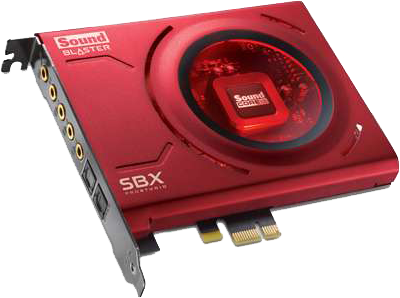
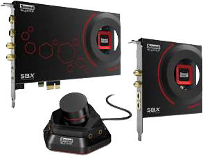

Conquer the insufficient PC audio sound card with the Creative Sound Blaster Audigy Fx Sound Card. This advanced sound card lets you overcome the default audio settings to enjoy studio like clarity in your living room. With its advanced chipset designed to process our legendary EAX reverb engine, you can look forward to experiencing superb 5.1 multi-channel audio. It also features an SNR of 106dB and the Sound Blaster Audigy Fx Control Panel, a dedicated PC software that allows you full control of every aspect of your sound card. If you're big on entertainment, you would also love it for its EAX Studio software that allows for additional hardware-accelerated environmental effects to your music, movies, games as well as for your voice input and communications. If audiophile quality listening is your thing, Audigy Fx features a 600-ohm headphone amplifier for studio-grade monitoring. Get yours today!
$49.99

Creative Sound Blaster Z - Sound card - 24-bit
For an ultra-high audio performance, choose this superior Sound Card from Creative Labs. This sound card allows a 5.1 channels setup, ensuring pure and pristine sound quality for a truly immersive gaming and movie viewing experience. It also utilizes a PCI Express interface for easy and secure installation to your computer. Pick up the Creative Labs Sound Card today!
Level up the sound performance of your PC with this Sound Card from Creative Labs. This sound card is the ideal all-round audio solution for all your PC gaming and entertainment needs. It has a 116dB Signal-To-Noise Ratio, making it 34.4 times better than the standard motherboard audio. It also ensures a fast and stable connection to your computer, thanks to its PCI Express interface. Buy the Creative Labs Sound Card right now!
$149.99

Creative Labs Sound Blaster ZxR Sound Card
Experience exceptional audio playback when you have this spectacular Sound Card from Creative Labs. Using this awesome sound card, you'll be able to experience unprecedented levels of audio realism along with stunning 3D surround effects for your speakers and headsets. It's 89.1 times better than the standard motherboard audio as it has a signal to noise ratio of 124dB. Plus, the PCI Express interface allows a fast and secure installation to your PC. Order the Creative Labs Sound Card right away!